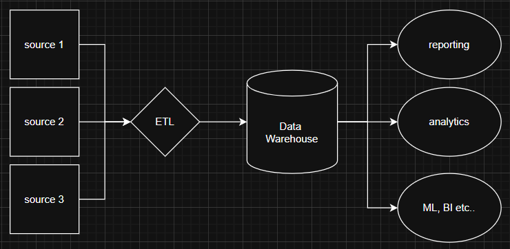

Date: 2025-12-02
Snowflake is a cloud based Data Warehouse that is able to store large amounts of data useful for analytics, reporting and sometimes Machine Learning
Pros
Snowflake comes in different editions, with varying features and pricing. Choose the one based on your use case
Snowflake consists of 3 layers:
Snowflake charges as per the compute power used and the amount of data stored

placeholder for image
Snowflake allows you to create different roles where you can manage access to different Databases, Schemas, Tables, Views
There are 4 common roles available in Snowflake
The original role who created the particular object can grant access to other roles to access/edit the object
To access any object in Snowflake you need to two details. One is Database name and the other is Schema name
There can be multiple schemas present in one Database
For example, consider a table name 'employee_details' present in database - 'employee_db' and schema - 'employee-schema'. you can select the table using the query -
SELECT * FROM employee_db.employee_schema.employee_details;
There will be a table named INFORMATION SCHEMA, which consists of all the tables and schema list of that particular database.
Snowflake supports 4 types of tables:
syntax for creating different types of tables:
-- Creating a Permanent Table
CREATE TABLE employee_details (
id INT,
name STRING,
department STRING
);
-- Creating a Temporary Table
CREATE TEMPORARY TABLE temp_employee_details (
id INT,
name STRING,
department STRING
);
-- Creating a Transient Table
CREATE TRANSIENT TABLE transient_employee_details (
id INT,
name STRING,
department STRING
);
-- Creating an External Table
CREATE EXTERNAL TABLE external_employee_details (
id INT,
name STRING,
department STRING
)
LOCATION='s3://your-bucket/employee_data/'
FILE_FORMAT = (TYPE = 'CSV' FIELD_DELIMITER = ',' SKIP_HEADER = 1);
Time travel will be available for Permanent (90 days) and Transient (1 day), Temporary (1 day) tables, but not for External tables.
Views are virtual tables that are based on the result set of a SQL query
Views do not store data themselves, but they are executed and displayed when accessed
Snowflake supports 3 types of views
syntax for creating different types of views:
-- Creating a Standard View
CREATE VIEW employee_view AS
SELECT id, name, department
FROM employee_details
WHERE department = 'Sales';
-- Creating a Materialized View
CREATE MATERIALIZED VIEW sales_employee_view AS
SELECT id, name, department
FROM employee_details
WHERE department = 'Sales';
-- Creating a Secure View
CREATE SECURE VIEW secure_employee_view AS
SELECT id, name, department
FROM employee_details
WHERE department = 'HR';
Stages are used to named storage locations where you can store files in Snowflake
They can be used to stage data for loading into tables or to store data that is not part of the database schema
Snowflake supports 3 types of stages:
Named Stages are again categorized into 2 types
syntax for creating stages:
--Accessing Table Stage
list @%employee_details; -- table name is employee_details
--Accessing User Stage
list @~;
-- Creating an Internal Named Stage
CREATE STAGE my_internal_stage;
-- Creating an External Named Stage (AWS S3 example)
CREATE STAGE my_external_stage
URL='s3://my-bucket/data/'
CREDENTIALS=(AWS_KEY_ID='your_aws_key_id' AWS_SECRET_KEY='your_aws_secret_key');
File formats define the structure of the data in files that are loaded into Snowflake
Snowflake supports various file formats including CSV, JSON, Avro, Parquet, ORC, XML etc
You can create your own file format and use it loading files from Stages
syntax for creating file formats:
-- Creating a CSV File Format
CREATE FILE FORMAT my_csv_format
TYPE = 'CSV'
FIELD_DELIMITER = ','
SKIP_HEADER = 1
FIELD_OPTIONALLY_ENCLOSED_BY = '"';
-- Creating a JSON File Format
CREATE FILE FORMAT my_json_format
TYPE = 'JSON'
STRIP_OUTER_ARRAY = TRUE;
We can broadly divide data loading approaches into two categories:
Bulk Loading can be done in many ways:
For loading local data:
The process of loading data from local storage involves:
CREATE STAGE my_internal_stage
FILE_FORMAT = my_csv_format;
PUT file:///path/to/your/local/file.csv @my_internal_stage;
COPY INTO employee_details
FROM @my_internal_stage
FILE_FORMAT = (FORMAT_NAME = my_csv_format);
For loading from cloud storage:
CREATE STAGE my_external_stage
URL='s3://my-bucket/data/'
CREDENTIALS=(AWS_KEY_ID='your_aws_key_id' AWS_SECRET_KEY='your_aws_secret_key')
FILE_FORMAT = my_csv_format;
COPY INTO employee_details
FROM @my_external_stage
FILE_FORMAT = (FORMAT_NAME = my_csv_format);
Continuous Loading is categorized in two ways based on frequency
Snowpipe is nothing but a name object containing a COPY command
Creating a snowpipe automatically creates a Snowflake pipe
We can also use the Snowpipe in two ways
CREATE OR REPLACE PIPE my_snowpipe AS
COPY INTO employee_details
FROM @my_external_stage
FILE_FORMAT = (FORMAT_NAME = my_csv_format);
CREATE OR REPLACE PIPE my_snowpipe_auto_ingest AS
COPY INTO employee_details
FROM @my_external_stage
FILE_FORMAT = (FORMAT_NAME = my_csv_format)
AUTO_INGEST = TRUE;
Streams are change data capture (CDC) objects that track DML changes (inserts, updates, deletes) made to a table over time
Streams allow you to query the changes made to a table since the last time the stream was accessed
Streams can be created on the following objects:
Streams cannot be created on Materialized Views and Secure objects like Secure Views
Streams adds 3 columns namely METADATA$ACTION, METADATA$ISUPDATE, METADATA$ROW_ID to track the changes
Streams are categorized into 3 types:
syntax for creating streams:
-- Creating a Standard Stream
CREATE OR REPLACE STREAM my_standard_stream ON TABLE employee_details;
-- Creating an Append-Only Stream
CREATE OR REPLACE STREAM my_append_only_stream ON TABLE employee_details
APPEND_ONLY = TRUE;
-- Creating an Insert-Only Stream
CREATE OR REPLACE STREAM my_insert_only_stream ON EXTERNAL TABLE employee_details
INSERT_ONLY = TRUE;
Tasks are scheduled jobs in Snowflake that can execute a SQL statement or a stored procedure that consists of multiple SQL statements
There are 4 parameters that are required in creating a task
Tasks are divided into multiple categories:
syntax for creating tasks:
-- Creating a User Managed Non-Cron Task
CREATE OR REPLACE TASK my_user_managed_task
WAREHOUSE = my_warehouse -- user created warehouse name
SCHEDULE = '5 MINUTE'
AS
INSERT INTO employee_audit_log (id, name, department, action)
SELECT id, name, department, 'INSERT'
FROM employee_details
WHERE METADATA$ACTION = 'INSERT';
-- Creating a Serverless Cron Task
CREATE OR REPLACE TASK my_serverless_cron_task
WAREHOUSE = 'XS_SNOWFLAKE_COMPUTE_WH' --give the defaut XS warehouse name
SCHEDULE = '0 0 * * *' -- Every day at midnight
AS
DELETE FROM employee_details
WHERE last_updated < DATEADD(month, -6, CURRENT_DATE());
You can check the status of tasks using the following command:
SELECT * FROM (information_schema.TASK_HISTORY(TASK_NAME => 'my_task'));
Time Travel allows you to access historical data (up to 90 days) that has been modified or deleted
We can set the retention period to a particular table while creating it using 'DATA_RETENTION_TIME_IN_DAYS'
You can query the data using the AT & BEFORE keywords:
-- Querying data at a specific point in time
SELECT * FROM employee_details AT (TIMESTAMP => '2023-10-01 12:00:00');
-- Querying data before a specific point in time
SELECT * FROM employee_details BEFORE (STATEMENT => 'query_id');
you can also restore the data using
UNDROP TABLE/SCHEMA/DATABASE;
Fail Safe is a 7-day period after the Time Travel retention period during which Snowflake can recover historical data for you
This cannot be done by the User, you have to connect to Snowflake personal support
Cloning allows you to create a copy of a database, schema, or table without duplicating the actual data
Clones are created instantaneously and share the same metadata as the original object, that means they refer to the same micro partitions until a change is made on clone
syntax for creating clones:
-- Creating a Database Clone
CREATE DATABASE employee_db_clone CLONE employee_db;
-- Creating a Schema Clone
CREATE SCHEMA employee_schema_clone CLONE employee_db.employee_schema;
-- Creating a Table Clone
CREATE TABLE employee_details_clone CLONE employee_db.employee_schema.employee_details;
This is a short summarization of the video - Snowflake for Beginners by Data Engineering Academy
← Back to Home ← Back to Blogs